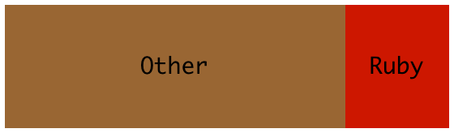

Ruby is slow! (even for a scripting language)
| Language | Exec Time |
|---|---|
| Intel Fortran | 1.15 |
| C++ g++ | 1.27 |
| Java 7 | 1.76 |
| Haskell GHC | 2.00 |
| JavaScript V8 | 3.40 |
| Lua | 26.52 |
| JRuby | 34.38 |
| PHP | 40.54 |
| Ruby 1.9 | 46.43 |
| Python 3 | 51.70 |
| Perl | 60.89 |
Quick answer: A LOT!
| Ruby 1.8.5 | Ruby 1.8.5 (Win) | YARV | JRuby | Ruby.NET | Rubinius | Cardinal | |
|---|---|---|---|---|---|---|---|
| Speedup: | 1.00 | -1.45 | 3.47 | -8.39 | -7.32 | -43.54 | -140.09 |
| Ruby 1.8.6 | Ruby 1.9 (YARV) | JRuby | XRuby | Rubinius | |
|---|---|---|---|---|---|
| Speedup: | 1.00 | 3.32 | 1.32 | 1.43 | 0.73 |
| Interpreter | LOC (non Ruby) | LOC (Ruby) |
|---|---|---|
| MRI (Ruby 1.8) | 85 000, C | 0 |
| YARV (Ruby 1.9) | 129 000, C | 0 |
| JRuby | 115 000, Java | ~ 1 000 |
| IronRuby | 48 000, C# | 0 |
| Rubinius | 25 000, C | 14 000 |
|  MRI/YARV |
Rubinius |
LOLCODE |
Most Ruby's use a Global Interperter Lock
This only allows for distributed parallelism